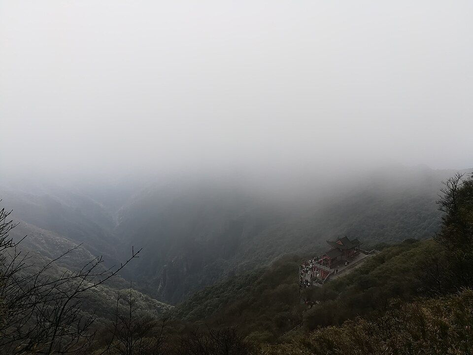

先看结论
快速决策索引
全年月份速查
- 1 月适合石阡温泉、铜仁古城；吃社饭、锅巴粉；注意梵净山冰雪停运
- 2 月适合温泉和低人流梵净山；吃绿豆粉；注意春节票务
- 3 月适合梵净山春景、寨沙；吃春季社饭；注意山顶温差
- 4 月适合杜鹃和云海；吃豆腐干；注意雨雾影响视野
- 5 月适合梵净山、亚木沟；吃酸汤鱼；注意五一预约
- 6 月适合避暑和峡谷；吃凉粉、苔茶；注意雷雨
- 7 月适合避暑但客流大；吃米豆腐；注意索道排队
- 8 月适合梵净山避暑、亚木沟；吃烧烤；注意暴雨
- 9 月适合晴天登山；吃酸汤鱼；注意国庆提前订票
- 10 月适合秋色、云海；吃社饭；注意山顶风大
- 11 月适合温泉、古城、低人流登山；吃热粉；注意淡季班次
- 12 月适合石阡温泉和雪后梵净山；吃羊肉汤；注意结冰封闭
季节限定景观

景点营业时间和票价速查
- 梵净山旺季常见 07:00-18:00，淡季和冬季缩短；门票常见约 100 元，观光车约 20 元，索道往返约 140 元；实名预约
- 寨沙侗寨开放式/免费为主，以餐饮和住宿消费为准
- 亚木沟常见白天开放，门票和观光车以景区平台为准
- 石阡温泉营业时间和票价按温泉酒店/景区当日政策
- 朱砂古镇常见白天开放，门票和矿洞项目以现场为准
- 铜仁古城开放式/免费，以店铺和展馆为准
行前准备
- 梵净山必须提前看天气、门票、索道和东西线入口
- 山顶风大温差明显，带防风外套、雨具、防滑鞋
- 梵净山一天强度高，第二天安排温泉或古城更舒服
住宿建议
- 江口县/梵净山脚适合早入园，优点省时间，缺点夜生活少
- 铜仁市区适合高铁/机场和吃喝，去梵净山需早出发
- 石阡温泉片区适合放松，适合梵净山后续
地图分区
- 梵净山江口片区景区东门、寨沙侗寨、亚木沟
- 铜仁市区片区铜仁古城、锦江、博物馆、小吃
- 石阡片区温泉和苔茶
- 万山片区朱砂古镇和矿山文化
核心景点
-

开放图库 梵净山游玩攻略最佳时间：4-10 月，晴天和云海天气最佳；看点：红云金顶、蘑菇石、老金顶、云海、佛教文化- 介绍世界自然遗产，贵州山岳景观第一梯队
- 最佳时间4-10 月，晴天和云海天气最佳
- 看点红云金顶、蘑菇石、老金顶、云海、佛教文化
- 搭配路线梵净山、寨沙侗寨、亚木沟
- 是否值得专程去非常值得
- 营业时间随季节调整，旺季早开，冬季受天气影响大
- 票价/预约方式门票、观光车、索道线上实名预约
- 游玩提醒天气不好体验下降明显，恐高和体力差慎爬红云金顶
-
寨沙侗寨
- 介绍梵净山脚侗寨，适合住宿、夜景和侗族风情
- 最佳时间梵净山前一晚或下山后
- 看点鼓楼、风雨桥、寨子夜景
- 搭配路线梵净山、亚木沟
- 是否值得专程去顺路值得
- 营业时间开放式
- 票价/预约方式免费为主，住宿餐饮另计
- 游玩提醒商业化轻重看位置，住宿提前订
-
亚木沟
- 介绍峡谷溪流和森林轻徒步，适合作为梵净山补充
- 最佳时间5-10 月
- 看点溪流、峡谷、森林、避暑
- 搭配路线寨沙侗寨、梵净山
- 是否值得专程去有 2 天值得
- 营业时间白天开放
- 票价/预约方式门票和景交以景区为准
- 游玩提醒雨季看安全公告
-
石阡温泉
- 介绍贵州温泉代表之一，适合冬季和雨天
- 最佳时间11 月至次年 3 月
- 看点温泉泡池、古温泉、石阡苔茶
- 搭配路线梵净山后放松
- 是否值得专程去喜欢温泉值得
- 营业时间以温泉酒店/景区为准
- 票价/预约方式温泉票和住宿套餐浮动
- 游玩提醒看清是否含毛巾、餐食和二次入园
-
朱砂古镇
- 介绍万山矿山文化和朱砂工业遗产体验
- 最佳时间全年，雨天可选
- 看点矿洞、朱砂文化、工业遗址、玻璃栈道项目
- 搭配路线铜仁市区半日
- 是否值得专程去亲子和工业遗产爱好者值得
- 营业时间白天开放
- 票价/预约方式门票和项目票以现场为准
- 游玩提醒购买朱砂制品看渠道和价格
街区/夜市/市场
- 铜仁古城/锦江边夜景、小吃、散步
- 江口县城梵净山前后吃饭补给
- 石阡温泉街区温泉餐饮和苔茶伴手礼
美食总表
- 特色菜酸汤鱼、社饭、腊肉、土鸡
- 小吃锅巴粉、绿豆粉、米豆腐、江口豆腐干
- 饮品石阡苔茶、冰粉、酸梅汤
- 夜市铜仁古城和江口县城夜宵
- 农贸市场市区菜市可买豆腐干、苔茶、辣椒制品
- 伴手礼石阡苔茶、江口豆腐干、朱砂文创、腊肉
餐厅和店铺
- 江口豆腐干店梵净山线伴手礼，注意保质期
- 铜仁锅巴粉店早餐优先
- 石阡苔茶店温泉线顺路买茶
- 酸汤鱼/土菜馆多人正餐更适合
博物馆和展馆
- 铜仁市博物馆城市和民族文化补充，开放以馆方公告为准
- 朱砂古镇矿山展馆了解万山矿业历史
- 梵净山游客中心展示了解自然遗产和保护规则
自然/远郊/周边
- 石阡温泉冬季和雨天首选
- 亚木沟轻徒步和避暑
- 朱砂古镇矿山文化和亲子项目
- 松桃苗王城民族文化延伸，适合自驾
路线模板
交通细节
- 铜仁有高铁和机场，去梵净山通常落脚江口县
- 梵净山景区分东线江口和西线印江，索道主要在江口线
- 市区到梵净山、石阡、朱砂古镇建议提前查班车或包车
避坑和取舍
- 天气差不要硬上梵净山，云雾大看不到核心景观
- 红云金顶台阶陡且排队，恐高者可只看蘑菇石
- 梵净山一天很累，不建议当天再赶长途
- 温泉票型差异大，看清是否含餐和入园次数
出发前复核清单
行程执行补强
到达后先做什么
- 抵达 铜仁 后先确认当日天气、景区入园时间和返程末班；把 梵净山、寨沙侗寨、亚木沟、石阡温泉 按地理方向拆开，不以地图直线距离代替实际通行时间。
- 第一天只安排一个核心片区入住、寄存行李、熟悉周边吃喝与停车/换乘点后再进景区。这样即使遇到排队、降雨或临时限流，也能保住当天的主要体验。
- 需要跨区的行程，出发前在官方入口与地图中分别核对一次。导航显示的时间不包含排队、观光车、索道、找车位和步行回程，应额外预留缓冲。
分区与动线
- 核心游览优先把 梵净山 作为半天或一天的主任务；其余 寨沙侗寨、亚木沟、石阡温泉 只在同方向、体力和开放时间允许时加入。
- 城市休整午餐、雨天与傍晚留给市区街区、展馆或商圈；不要为了打卡在中午往返远郊。需要夜游时，先确认最后一班公共交通、停车场关闭时间和打车供给。
- 远郊选择若只住一晚，宁可减少一个景点，也不要把远郊和市区夜游排进同一日。自驾以返回住宿地前仍留有充足精力为底线，山路、雨雾和节假日要再收紧计划。
餐饮与补给
- 这座城市可优先从 特色菜、小吃、饮品、夜市 中选一到两样作为正餐，再用同片区的小吃补充；同一天不要跨城寻找网红店。
- 早餐适合安排在住宿周边或菜市场一带，午餐以靠近主景区为先，晚餐再回到夜间活动片区。热门店排队超过预留时间时，直接选择相邻街区的同类店，行程体验通常更稳定。
- 购买伴手礼时先看生产日期、常温保存和携带限制；自驾可放在返程前采购，公共交通出行则优先轻量、耐压的包装。
路线落地模板
- 半天梵净山 + 同片区散步/展馆 + 特色菜。适合早到、转场或天气不稳定的日子。
- 一天上午 梵净山，午后在 寨沙侗寨 或市区人文点二选一，傍晚安排 小吃。每个节点之间留出交通与休息时间。
- 两天第一天完成城市核心与夜间街区，第二天只选择一条远郊或自然线；可从现有攻略中的 半天、1 天、经典片区线 里选与住宿方向一致的一条。
- 雨天优先博物馆、室内展馆、商场和老街，把需要视野、步道或水上项目的景点挪到天气恢复后；门票改签与景区公告以官方页面为准。
预算、停车与安全边界
- 预算按住宿、交通/油费、门票、餐饮和机动金五项拆分。门票、停车、观光车、索道、演出和游船常为独立项目，提交行程前逐项核验，避免把“景区门票”理解为全部费用。
- 自驾抵达景区前保存停车场位置、收费规则和出口方向；节假日不要依赖最后一个停车场。纯电或插混车辆应在进入远郊前完成补能，并保留一处备选充电点。
- 夜间、山地、海边、峡谷与涉水项目要服从天气预警和现场管制。遇到大风、雷雨、能见度低或道路封闭时，立即切换到市区备选，不追赶原计划。
出发前最后核验
- 核对 梵净山、寨沙侗寨、亚木沟、石阡温泉 的开放日期、预约入口、实名要求、临时闭园和分时段入园规则。
- 核对住宿到第一站的实际通行时间、停车/换乘、返程末班，以及第二天是否需要提前退房或寄存行李。
- 核对天气预警、道路施工、节假日客流和活动公告；易变项目以城市页末尾来源链接及官方当天公告为准。